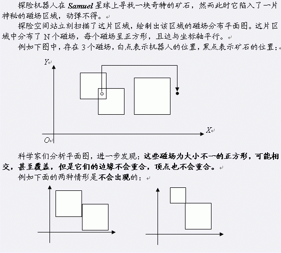

BZPRO
#1967. [Ahoi2005]CROSS 穿越磁场
内存限制：64 MiB
时间限制：3 Sec
提交
提交记录
讨论
题目描述
 科学家们给探险机器人启动了磁力罩，这样它就可以在磁场中自由穿越了。 初始时，探险机器人和所有矿石都不在任何磁场的边缘。由于技术限制，在穿越过程中机器人只能够水平或垂直移动，且不能够沿着磁场的边缘行动。 由于磁力罩的能量有限，科学家们希望探险机器人穿越尽量少的磁场边缘采集到这块矿石。例如上图中，探险机器人最少需要穿越两次磁场边缘。 现在小联请你编写程序，帮助科学家们设计探险机器人的路线，统计探险机器人最少需要穿越多少次磁场边缘。
输入格式
第一行有一个整数N，表示有N个磁场（1 < N < 100）。随后有N行，每行有三个整数X、Y、C（0 < X ,Y ,C < 10000），表示一个磁场左下角坐标为（X,Y），边长为C。接下来有一行，共有四个整数SX, SY, TX, TY，表示机器人初始坐标为（SX, SY），矿石坐标为（TX，TY）（其中，1 < SX, SY, TX, TY < 10000）。
输出格式
单行输出一个整数，表示机器人最少需要穿越多少次磁场边缘。
样例
样例输入
2
1 3 3
2 1 4
0 0 3 4
样例输出
2
数据范围与提示